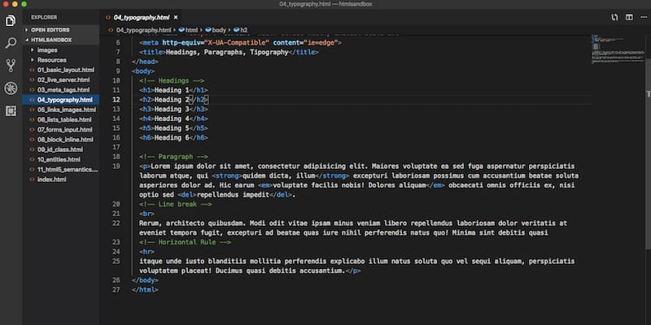
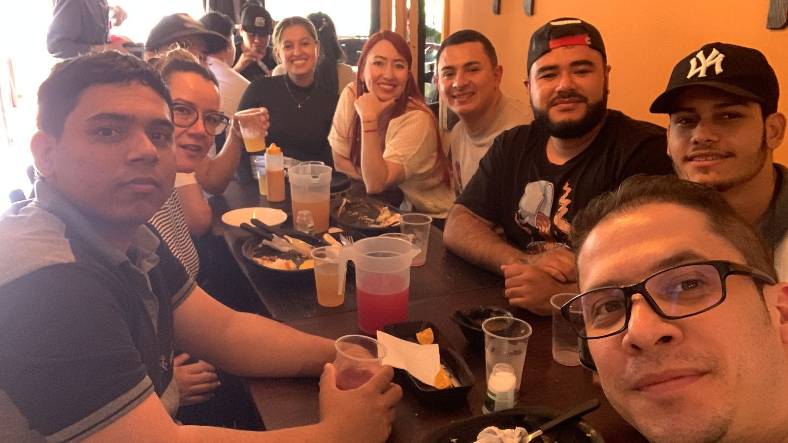
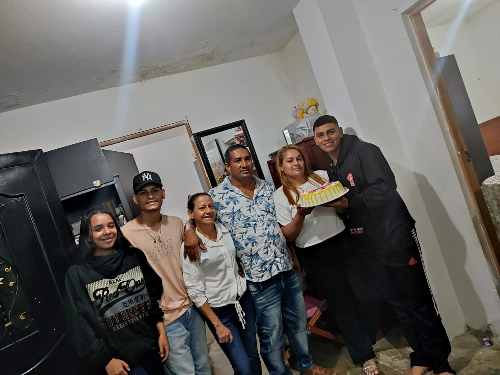
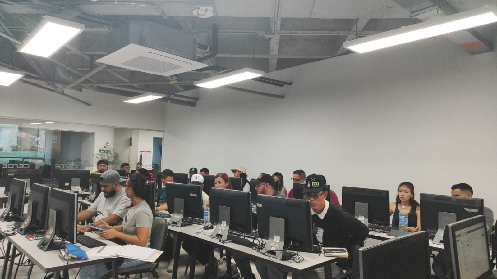

Soy una persona muy soñadora, soy alegre, extrovertido y lleno de metas poo complir,
me encanta compartir con mis padres y apoyarlos en todo momento,soy el tipo de persona
que lucha pore sus sueños por mas obstaculos que encuentre en el camino.
en estos momentos me enfoco en aprender todo lo que sea posible de mi estudio en
desarrollo de SOFTWARE y en mi desempeñarme lo mejor que pueda en mi gran pasion
que es el baloncesto, por eso es que me considero una persona que lucha siempre por
todo lo que quiere.
Conocimiento
HTML un 30%, CSS3 un 25%
sistemas de seguridad un 70%

Experiencia Laboral
Desarrollador Web
Nombre de la Empresa - marketing.icon play
Fecha de inicio 22/03/2021 - Fecha de finalización 16/07/2022
en mi lavor no era mucho de desarrollasor sino mas bien de apoyo y poseedor de
opiniones para el equipo. ademas de que me enfocaba en aprender de cada uno de ellos
para ir mejorando mas y mas en este que es un gran trabajo y tambien me encargaba de
tomar las ordenes de compra que montaban los clientes en el sistema, les generaba una
taza de presupuesto y las diferentes opciones que teniamos para crear sus paginas asi
como tambien el contrato y las formas de pago para estar claros a la hora de empezar a
trabajar, y para terminar de validar todo el proceso sobre el pedido de la pagina.
Metas

1: primordialmente terminar mis estudios en DESARROLLO DE SOFTWARE y empezar a
trabajar en programacion para lograr cumplir el resto de mis metas y sueños
y asi poder darle una gran alegria a mis padres.

2: tener un trabajo estable con un buen sueldo y tener con que apoyar, respaldar
y cuidar a toda mi familia, para que ellos no tengan que trabajar y asi
cuidarloslos.

3:tener propiedades, y una buena entrada de dinero ya que este es un buen trabajo y
muy rentable del cual quiero poder organizarme.